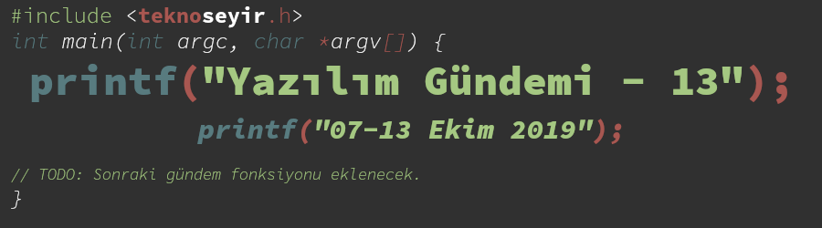
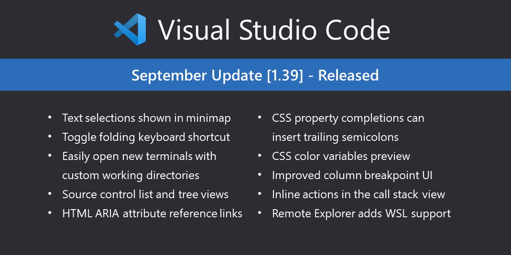

Yazılım Gündemi - 13
7-13 Ekim 2019
İçindekiler
- 1. Github ile ABD Göçmenlik ve Gümrük Muhafaza kurumu arasındaki iş anlaşması tartışmalara yol açtı
- 2. GNU projesi geliştiricileri Richard M. Stallman'ın devam eden liderliğine itiraz ediyor
- 3. Chrome, geliştiricinin
autocomplete=offseçimine rağmenautofillözelliğini kapatmıyor - 4. Visual Studio Code Eylül 2019 (1.39) sürümü yayınlandı
- 5. Yaklaşan Etkinlikler
- 6. Diğer Haberler
- 7. Lisans

< Önceki Gündem | 7-13 Ekim 2019 | Sonraki Gündem >
1 Github ile ABD Göçmenlik ve Gümrük Muhafaza kurumu arasındaki iş anlaşması tartışmalara yol açtı
Github ve ABD Göçmenlik ve Gümrük Muhafaza Kurumu arasındaki yaklaşık 200.000$'lık bir iş anlamasının yenilenme zamanı gelince ortalık biraz karıştı. Birkaç hafta önce de bir geliştiricinin aynı kurumu protesto etmek için yaptığı bir eylemden bahsetmiştim (bkz: Yazılım Gündemi - 10). Amerika'da yaşamadığım için doğal olarak bu kurum ve politikalarıyla ilgili bir bilgim yok fakat insanların bu kadar fazla olay etmesine bakılırsa pek iyi bir kuruma benzemiyor.
GitHub durumu açıklamak için tüm çalışanlarına gönderdiği e-postanın aynısını bloglarında yayınladı. Olayın geçmişinden ve kendilerinin izledikleri rollerden bahsetmişler. Kısaca özetlemek gerekirse: ilk iş anlaşması 2016 yılında yapılıyor ve ilgili kurum GitHub Enterprise Server lisansı alıyor. Sanırım o zamanlarda bu kurumun olay yaratan politikaları gündemde değilmiş. GitHub ve Microsoft, ilgili kurumun olay yaratan politikalarına her ne kadar karşı olsalar da "iş başka arkadaşlık başka" hesabıyla anlaşmaya devam ettiklerini belirttiler. "Kurumun ilgili politikalarını her yerde protesto ettik ve etmeye devam edeceğiz" deyip ekliyorlar: "Protesto amaçlı organizasyonlara 500.000$'lık bağış yapacağız".
Twitter'daki şu gönderi altında bayağı bir tartışma dönmüş durumda. Bazı GitHub ve Microsoft çalışanlarının da olayları protesto ettiğine yönelik haberler var. Bakalım olaylar nereye varacak.
2 GNU projesi geliştiricileri Richard M. Stallman'ın devam eden liderliğine itiraz ediyor
Geçtiğimiz haftalarda Richard M. Stallman'ın bazı söylemleri yüzünden Özgür Yazılım Vakfı'ndaki (Free Software Foundation) ve MIT'deki görevinden ayrıldığını konuşmuştuk (bkz: Yazılım Gündemi - 10). Sonraki haftalarda Stallman, "FSF ve MIT'den istifa ettim fakat GNU projesine liderlik etmeye devam ediyorum" şeklinde bir açıklama yaptı.
6 Ekim'de FSF şöyle bir yazı yayınladı ve özgür yazılım topluluğundan durumla ilgili görüşler toplamaya başladı. Bunun üzerine bazı GNU projesi geliştiricileri de fikirleri açık şekilde bir yazı ile belirtmek için 7 Ekim'de şu yazıyı yayınladılar. Yazıca kısaca Richard Stallman'ın özgür yazılım hareketinin ve GNU projesini ilk ortaya koyan ve büyük emekler veren kişi olduğunu kabul ettiklerini fakat yıllar içerisinde Stallman'ın davranışlarının değişmesinden dolayı artık GNU projesini temsil etmediğini düşündüklerini belirtmişler.
10 Ekim tarihli bir güncelleme notu düşülen bu sayfada toplanan tüm görüşlerin hem FSF hem de GNU liderliğiyle özel olarak paylaşıldığı belirtilmiş. Bakalım süreç nasıl devam edecek. Sizin konu hakkındaki görüşleriniz nedir? Richard Stallman tamamen yazılım camiasından dışlanmalı mıdır yoksa politik görüşleri ayrı, programcı (hacker) kişiliği ayrı mı değerlendirilmelidir? Yorumlar kısmında konuşalım.
3 Chrome, geliştiricinin autocomplete=off seçimine rağmen autofill özelliğini kapatmıyor
Autocomplete (otomatik tamamlama), kullanıcıların bir metin kutusuna
birşeyler yazarken daha önce yazdıklarını önermeye yarayan bir tarayıcı
özelliği. autofill (otomatik doldurma) ise sayfadaki bir formu, elemanların
autocomplete özelliğindeki değerlerden yararlanarak otomatik olarak
tarayıcıda kayıtlı değerlerle doldurmaya yarayan bir özellik. Örneğin bir
kullanıcı girişi formunda kullanıcı adınızı yazdıktan sonra şifre kutusunun da
otomatik olarak doldurulması. Çoğu durumda faydalı olabilirken bazen de
geliştirici için biraz sorunlu olabiliyor. Böyle durumların üstesinden gelmek
için de bu özelliği input bazında kapatmaya yarayan bir tercih
geliştiricilere sunulmuş fakat chrome'un buna tercihe saygı duymadığı,
autocomplete=off seçili olduğu halde otomatik doldurma özelliğini kapatmadığı
ortaya çıktı. Aslında bu yeni bir olay değil konu başlığına eklediğim
bağlantıdan da görebileceğiniz gibi ilgili issue 12 aralık 2018 tarihinde
açılmış fakat hala daha çözülmediği için tekrar gündeme geldi ve geliştiriciler
sitemlerini belirtmeye devam ediyor. Açıkcası Google'dan giderek daha da
soğuyan bir kişi olarak, bu durumdan da hiç haz etmedim. Resmen kodladığımız
siteye ve ona belirttiğimiz tercihlere aykırı hareket ediyor ve uzun zamandır
da hiçbir eylem alınmış değil. Google'a artık birilerinin dur demesi gerekiyor
ama kim ne zaman diyecek bilemiyoruz. Bakalım ne olacak. Siz bu konuda ne
düşünüyorsunuz?
Düzeltme (14.10.2019 11:40): autocomplete ve autofill özelliklerinin
karıştırılmasından doğan yanlış anlaşılma sorunu giderildi.
4 Visual Studio Code Eylül 2019 (1.39) sürümü yayınlandı

Ayrıca Python eklentisinin bu ay duyurulan yeni sürümü ile VS Code'da artık native olarak Jupyter Notebook düzenleme özelliği de geldi.
5 Yaklaşan Etkinlikler
| Etkinlik İsmi | Yer | Tarihi |
|---|---|---|
| Managing Different Environments | Ankara | 15 Ekim 18:30 |
| Zebra Emea Android Developer Seminars | İstanbul | 16 Ekim 09:00 |
| TRAI Meet-Up #27 Yapay Zekâ Altyapıları | İstanbul | 16 Ekim 18:00 |
| Yazılımda Kariyer'19 | İstanbul | 16 Ekim 18:30 |
| Kubernetes Operators 101 | İstanbul | 16 Ekim 19:00 |
| Kuantum Makine Öğrenmesi | İstanbul | 17 Ekim 18:30 |
| Big Data'dan Nasıl Anlam Çıkarılır? | İstanbul | 18 Ekim 19:00 |
| Workshop: Sesli Arayüzlerde Görsel Cevaplar | İstanbul | 19 Ekim 11:00 |
6 Diğer Haberler
- Mozilla güvenlik takımı, iTerm2'de kritik bir güvenlik açığı buldu.
- Yeni bir build ve test aracı: Bazel, GitHub Deposu.
- Amazon Elastic Kubernetes Service içerisindeki Windows Container desteği artık herkese açık hale geldi.
- IoT için görsel programlama ortamı sunan Node-RED ilk stabil sürümü 1.0'ı duyurdu.
- Mycroft isimli firma sesli asistan yazılımını AGPL lisansı ile açık kaynak hale getirdiler. Firmanın GitHub Sayfası
- Yeni bir LISP lehçesi duyuruldu: Bel.
- PyTorch 1.3 duyuruldu.
- OpenSSH 8.1 duyuruldu.
- JDK 14 sürümünde JFR Event Streaming özelliği gelecek.
- Next.js 9.1.1 sürümü yayınlandı.
- AndroidX WorkManager API 2.3.0-alpha02 sürümü çıktı.
- C kütüphanesi tbox, 1.6.4 sürümünü duyurdu.
7 Lisans

Yazılım Gündemi - 13 yazısı Eren Hatırnaz tarafından Creative Commons Atıf-GayriTicari-AynıLisanslaPaylaş 4.0 Uluslararası Lisansı (CC BY-NC-SA 4.0) ile lisanslanmıştır.